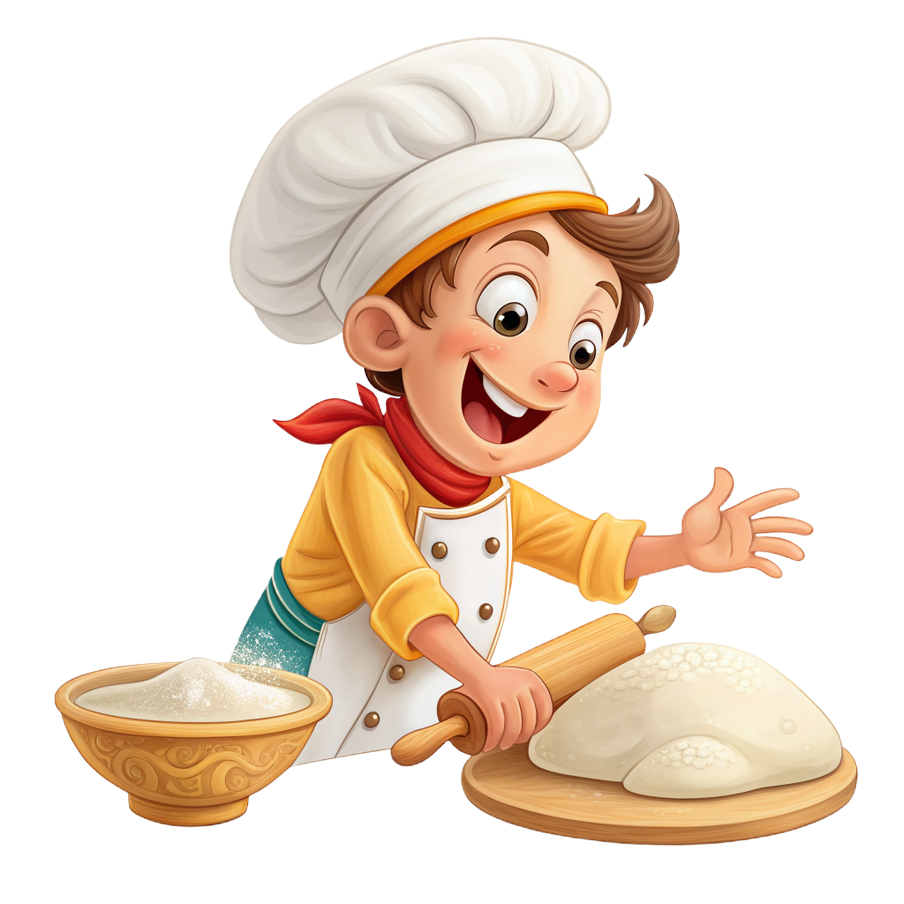

Texto

Imagen con licencia CC0 (Dominio público)
Autoría: Pixabay
Fuente: https://pixabay.com
MÁSTER CHEF JUNIOR: APRENDEMOS FRACCIONES COCINANDO
Un reto culinario para dominar las fracciones
Proyecto de Aprendizaje Basado en Proyectos (ABP)
5º de Educación Primaria - Matemáticas
Autor: Juan Carlos Palmero Sierra
Licencia del recurso: CC BY-NC-SA 4.0

Imagen con licencia CC0 (Dominio público)
Autoría: Pixabay
Fuente: https://pixabay.com